Partie II : Étude de schémas numériques
Le sujet s'intéresse aux équations différentielles du second ordre de la forme :
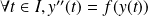 (II.1)
où f est une fonction donnée, continue sur
 .
.
Pour résoudre numériquement l'équation différentielle (II.1), il est introduit la fonction 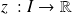 définie par 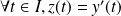 .
Ensuite, les premières questions de cette partie permettent de définir les deux suites suivantes, avec 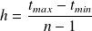 .
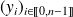 telle que 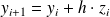 ;
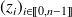 telle que 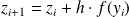 .
Ces relations de récurrence permettent de déterminer les valeurs de
 et de
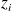
connaissant
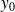
et
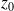
.
et de
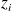
connaissant
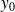
et
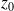
.
Question
Écrire une fonction euler qui reçoit en argument les paramètres qui vous semblent pertinents et qui renvoie deux listes de nombres correspondant aux valeurs associées aux suites
C'est un procédé de vectorisation déguisé. Au lieu de renvoyer une liste de vecteurs contenant les
et
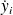
, la fonction renvoie simplement deux listes contenant les
et les
pour
 .
.
def euler(y0, z0, f, tmin, tmax, n):
'''renvoie les listes des valeurs de y et de z dont les valeurs sontapprochees par la methode d'Euler explicite.'''Y = [y0]
Z = [z0]
h = (tmax - tmin) / (n - 1)
for i in range(1, n):
Y.append(Y[i - 1] + h * Z[i - 1])
Z.append(Z[i - 1] + h * f(Y[i - 1]))
return (Y, Z)
Afin de vérifier le comportement de ce schéma numérique, l'étude s'intéresse à un oscillateur harmonique parfait défini par l'équation différentielle 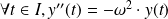 .
Les paramètres de l'étude sont
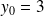
,
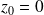
,
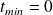
,
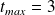
,
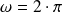
et
 .
.
Question
Tracer l'évolution temporelle
 selon
selon
 de cet oscillateur harmonique à l'aide de la fonction euler.
de cet oscillateur harmonique à l'aide de la fonction euler.
Commenter la courbe obtenue.
Ne pas oublier d'importer les modules nécessaires.
from numpy import pi, linspace
import matplotlib.pyplot as plt
y0, z0 = 3, 0
omega = 2 * pi
periode = 2 * pi / omega
tmax = 3 * periode
tmin = 0
n = 100
def f(x, omega = 2 * pi):
'''renvoie l'equation differentielle.'''return (- pow(omega, 2) * x)
Ye, Ze = euler(y0, z0, f, tmin, tmax, n)
t = linspace(tmin, tmax, n)
plt.plot(t, Ye)
plt.xlabel(r'$t$') # etiquette des abscisses au format LaTeX
plt.ylabel(r'$y$')
plt.title('Euler')
plt.show()
Voici la courbe obtenue.
C'est plutôt l'évolution temporelle d'un oscillateur très excité !
L'étude propose à présent de s'intéresser à un autre schéma numérique que l'on doit à Loup Verlet. Il propose en 1967 un nouveau schéma d'intégration d'une équation de la forme (II.1) dans lequel, en notant 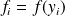 et 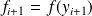 , les relations de récurrence s'écrivent :
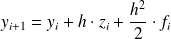 et 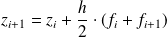
Question
Écrire une fonction verlet qui reçoit en argument les paramètres qui vous semblent pertinents et qui renvoie deux listes de nombres correspondant aux valeurs associées aux suites et .
L'idée est de recopier la fonction euler précédente et de ne modifier que le schéma numérique.
def verlet(y0, z0, f, tmin, tmax, n):
'''renvoie les listes des valeurs de y et de z dont les valeurs sontapprochees par la methode de Verlet.'''Y = [y0]
Z = [z0]
h = (tmax - tmin) / (n - 1)
for i in range(1, n):
Y.append(Y[i - 1] + h * Z[i - 1] + (pow(h, 2) / 2) * f(Y[i - 1]))
Z.append(Z[i - 1] + (h / 2) * (f(Y[i - 1]) + f(Y[i])))
return (Y, Z)
Question
Tracer l'évolution temporelle
selon
de l'oscillateur harmonique à l'aide de la fonction verlet.
Commenter la courbe obtenue.
Yv, Zv = verlet(y0, z0, f, tmin, tmax, n)
plt.plot(t, Yv)
plt.xlabel(r'$t$') # etiquette des abscisses au format LaTeX
plt.ylabel(r'$y$')
plt.title('Verlet')
plt.show()
Voici la courbe obtenue.
C'est un peu plus fidèle à l'idée du comportement d'un oscillateur harmonique parfait.
Complément :
Une fois toutes vos fonctions écrites dans un fichier, il suffit de l'enregistrer sous schemas_numeriques.py et de l'importer dans vos prochains fichiers avec la commande suivante pour que Python l’interprète comme un module. Il faut néanmoins que ces fichiers soient dans le même répertoire.
import schemas_numeriques as snum
Le fichier relatif à ce module est disponible en téléchargement ci-dessous.
Question
Tracer les portraits de phase obtenus pour cet oscillateur avec les deux méthodes programmées.
Un portrait de phase est la représentation géométrique des trajectoires d'un système dynamique dans l'espace des phases, espace abstrait dont les coordonnées sont les variables dynamiques du système étudié. À chaque ensemble de conditions initiales correspond une courbe ou un point.
Pour tracer plusieurs sous-graphes dans un graphe, il faut utiliser la commande subplot du module matplotlib.pyplot dans Python.
Dans la commande plt.subplot les arguments sont (nbre de lignes, nbre de colonnes, numéro de la figure). Il y a une condition à respecter : le nombre de lignes multiplié par le nombre de colonnes est supérieur ou égal au nombre de figure. Ensuite Matplotlib place les figures au fur et à mesure dans le sens des lignes. Voici un exemple.
plt.subplot(3, 2, 1) # 1er sous-graphe parmi 3 lignes et 2 colonnes
plt.plot(X1, Y1)
plt.subplot(3, 2, 2) # 2eme sous-graphe parmi 3 lignes et 2 colonnes
plt.plot(X2, Y2)
# Importation des modulesfrom math import pi # Pour avoir une valeur de pi
import numpy as np
import matplotlib.pyplot as plt # Pour tracer les courbes
# Importation des fonctions precedentesimport fonctions_utilitaires as ut
import schemas_numeriques as snum
# Declaration des constantesy0, z0 = 3, 0
tmin, tmax, = 0, 3
omega = 2 * pi
n = 100
f = lambda x : - pow(omega, 2) * x
# Calcul des valeurs de y et zYe, Ze = snum.euler(y0, z0, f, tmin, tmax, n)
Yv, Zv = snum.verlet(y0, z0, f, tmin, tmax, n)
# Trace des courbesplt.subplot(1, 2, 1) # 1er sous-graphe parmi 1 ligne et 2 colonnes
plt.plot(Ye, Ze, color = 'grey')
plt.plot(Ye, Ze, linestyle = '*', marker = 'o', markersize = 5,
markerfacecolor = 'black')
plt.axis([-15, 20, -80, 100]) # precise l'amplitude des axes
plt.title('Euler')
plt.xlabel(r'$y$')
plt.ylabel(r'$z$')
plt.subplot(1, 2, 2) # 2d sous-graphe
plt.plot(Yv, Zv, color = 'grey')
plt.plot(Yv, Zv, linestyle = '*', marker = 'o', markersize = 5,
markerfacecolor = 'black')
plt.axis([-10, 10, -80, 100])
plt.title('Verlet')
plt.xlabel(r'$y$')
plt.ylabel(r'$z$')
plt.show()
Voici la courbe obtenue.
Complément :
Le fichier contenant ces différents tracés est disponible ci-dessous.